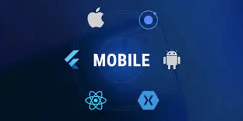
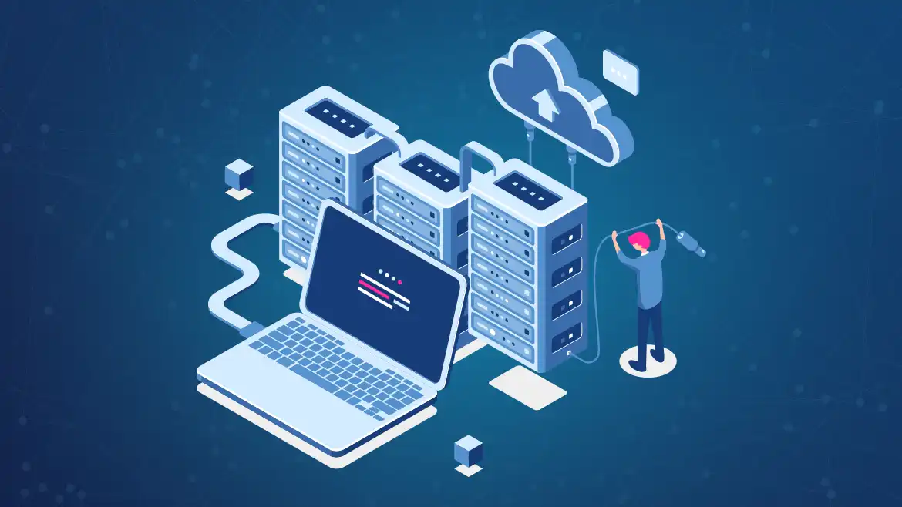

Desenvolvimento web

Transforme Sua Presença Online com Nosso Serviço de Desenvolvimento Web!
O que oferecemos:
- Sites Responsivos: Perfeitos em qualquer dispositivo - desktop, tablet ou smartphone.
- Design Moderno e Personalizado: Criamos um site com a cara da sua marca.
- Otimização para SEO: Coloque sua empresa nos primeiros lugares do Google.
- E-commerce Poderoso: Venda online de forma rápida e segura.
- Desempenho e Velocidade: Sites ágeis que encantam os usuários.
Por que escolher a gente?
- Equipe Especializada: Desenvolvedores experientes e apaixonados pelo que fazem.
- Atendimento Personalizado: Suporte de ponta a ponta.
- Prazo Garantido: Entregamos o que prometemos, no prazo combinado.
Desenvolvimento Mobile
Por que investir no desenvolvimento mobile?
- Maior Alcance e Acessibilidade: Aplicativos permitem alcançar mais clientes e facilitar o acesso rápido aos serviços.
- Fidelização de Clientes: Notificações push ajudam a manter os usuários engajados e informados sobre promoções.
- Experiência do Usuário Melhorada: Aplicativos são mais rápidos e intuitivos do que sites móveis.
- Vantagem Competitiva: Muitas empresas ainda não possuem aplicativos, o que pode ser um diferencial estratégico.
- Monetização e Aumento de Receita: Possibilidade de ganhar com anúncios, assinaturas e compras dentro do app.
- Melhoria na Comunicação: Canais diretos como chats e notificações otimizam o relacionamento com o cliente.
- Eficiência Operacional: Automação de processos como agendamentos e controle de estoque.
Banco de Dados
Por que investir em banco de dados?
- Armazenamento de Informações: Banco de dados é o local onde as informações da empresa são armazenadas de forma segura e organizada.
- Agilidade e Eficiência: Acesso rápido e fácil às informações, otimizando processos e tomadas de decisão.
- Segurança dos Dados: Proteção contra perda, roubo e vazamento de informações sensíveis.
- Integração de Sistemas: Banco de dados permite a integração de diferentes sistemas e aplicações, facilitando a comunicação entre eles.
- Relatórios e Análises: Geração de relatórios e análises de dados para embasar decisões estratégicas.
- Backup e Recuperação de Dados: Possibilidade de fazer cópias de segurança dos dados e recuperá-los em caso de falhas.
- Escalabilidade: Capacidade de expansão do banco de dados conforme o crescimento da empresa.
Contato
• E-Mail: Paulo.999x@atx.com
• Telefone: (83) 99418-4451
• Instagram: @ATXsolutions